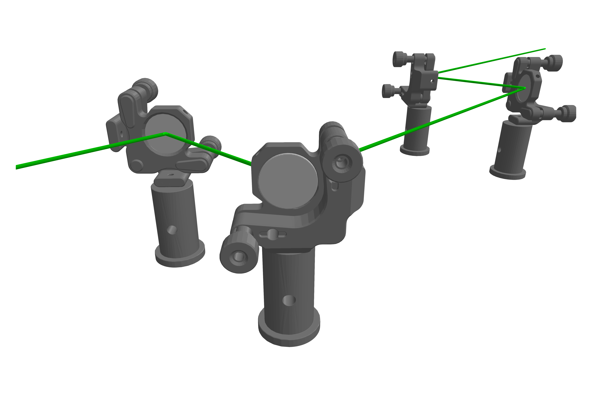
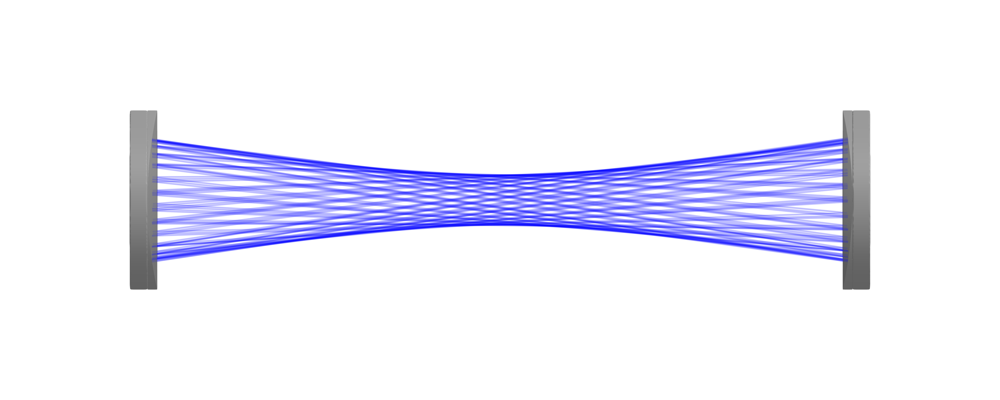
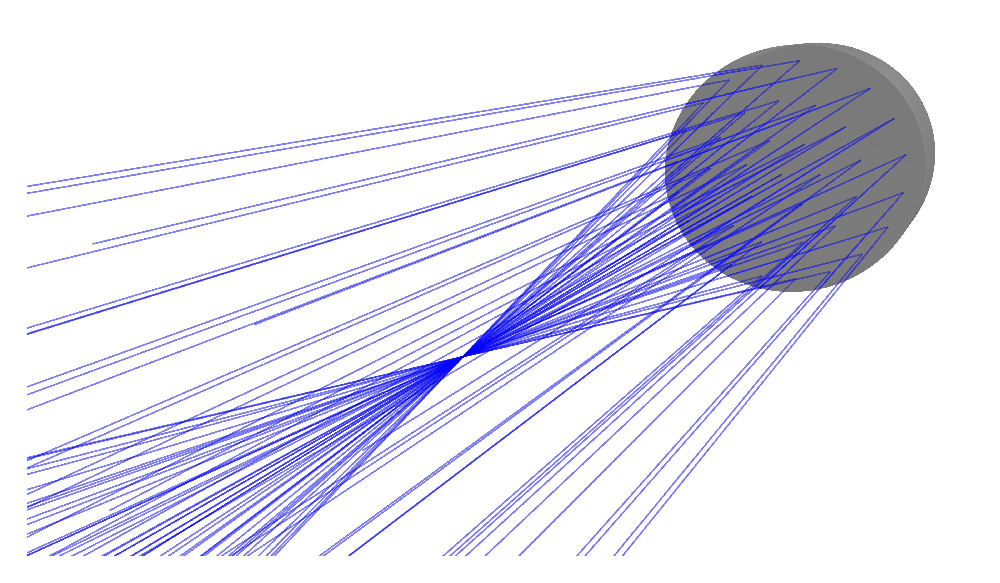
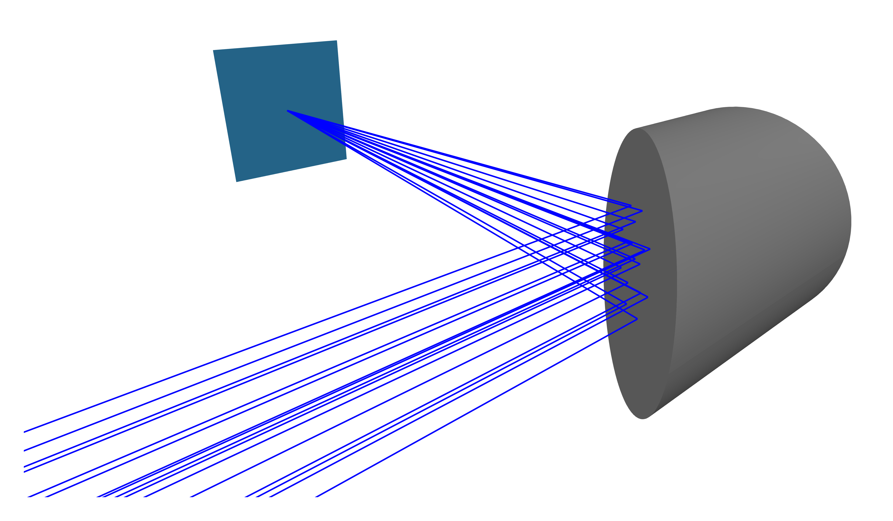

Mirrors
A common optical element with a straight-forward optical interaction. This kind of component is in general defined as a BeamletOptics.AbstractReflectiveOptic. For a basic Ray the interaction is simply defined by the BeamletOptics.reflection3d function. A more complex algorithm is required when when a PolarizedRay interacts with a reflecting surface. The polarization calculus that is performed is explained in the Polarized rays section. Below, some of the concrete implemented mirror types are shown. In general, the Mirror is used as a concrete type to represent an arbitrary reflecting shape.
BeamletOptics.Mirror — Type
Mirror{S <: AbstractShape} <: AbstractReflectiveOpticConcrete implementation of a perfect mirror (R = 1) with arbitrary shape.
The following constructors can be used to generate flat reflecting shapes. Additional types are explained below.
Plano Mirrors
A category of mirrors with a flat reflecting surface. A round version of this mirror can be easily generated using the RoundPlanoMirror or RightAnglePrismMirror types:
BeamletOptics.RoundPlanoMirror — Method
RoundPlanoMirror(diameter, thickness)Returns a cylindrical, flat RoundPlanoMirror with perfect reflectivity based on:
Inputs
diameter: mirror diameter in [m]thickness: mirror substrate thickness in [m]
Below, a trivial example of a beam path propagating through a system of Ø1"-mirrors mounted in KM100CP/M kinematic mounts is shown (e.g. PF10-03-P01). Note that the mounts are modeled as NonInteractableObjects.

Spherical Mirrors
The SphericalMirror represents an ideal optical element with a spherical concave reflective surface, commonly used for non-dispersive focusing applications. Its geometry is modeled using a combination of a concave spherical surface and a plano substrate, represented internally by a BeamletOptics.UnionSDF (refer also to the SDF-based spherical lenses section).

The following constructor allows the spawning of spherical mirrors.
BeamletOptics.SphericalMirror — Method
SphericalMirror(radius, thickness, diameter)Constructor for a spherical mirror with a concave reflecting surface. The component is aligned with the positive y-axis. See also SphericalMirror.
Inputs
radius: the spherical surface radius of curvature in [m]thickness: substrate thickness in [m]diameter: mirror outer diameter in [m]
Parabolic Mirrors
The ParabolicMirror represents an on-axis parabolic mirror. In contrast to the SphericalMirror, a paraboloid focuses a collimated beam that is parallel to its optical axis into a single point without spherical aberration. Its surface $y = -\frac{x^2 + z^2}{4f}$ is the special case $x_{\text{off}} = 0$ of the BeamletOptics.OffAxisParaboloidSDF, such that the focus lies at $(0, -f, 0)$.

The following constructor allows the spawning of on-axis parabolic mirrors.
BeamletOptics.ParabolicMirror — Method
ParabolicMirror(f, diameter; thickness=nothing)Constructs an on-axis parabolic Mirror with focal length f. The vertex of the concave reflecting surface lies at the origin, the mirror opens towards the negative y-axis and its focus lies at (0, -f, 0). The shape is an OffAxisParaboloidSDF without off-axis offset.
Inputs
f: Focal length [m]diameter: Mirror aperture diameter [m]thickness: Substrate thickness [m], rim sag + 10 mm ifnothing(default)
Off-Axis Parabolic Mirrors
The OffAxisParabolicMirror represents an off-axis parabolic (OAP) mirror used for achromatic focusing and beam deflection without introducing spherical aberration.
Its geometry is constructed from a parent paraboloid with focal length $f$ and off-axis distance $x_{\text{off}}$, parameterized by the Reflected Focal Length ($RFL$) and deflection angle $\theta_d$ (default 90°):
\[f = RFL \cdot \cos^2\left(\frac{\theta_d}{2}\right), \quad x_{\text{off}} = RFL \cdot \sin(\theta_d)\]

The following constructor allows the spawning of off-axis parabolic mirrors.
BeamletOptics.OffAxisParabolicMirror — Method
OffAxisParabolicMirror(rfl, diameter; angle=90, thickness=nothing)Constructs an Off-Axis Parabolic (OAP) Mirror from:
Inputs
rfl: Reflected Focal Length (distance from aperture center to focus) [m]diameter: Mirror aperture diameter [m]angle: Deflection angle in degrees (default: 90°)thickness: Substrate thickness [m], calculated automatically to ensure solid backing ifnothing(default)